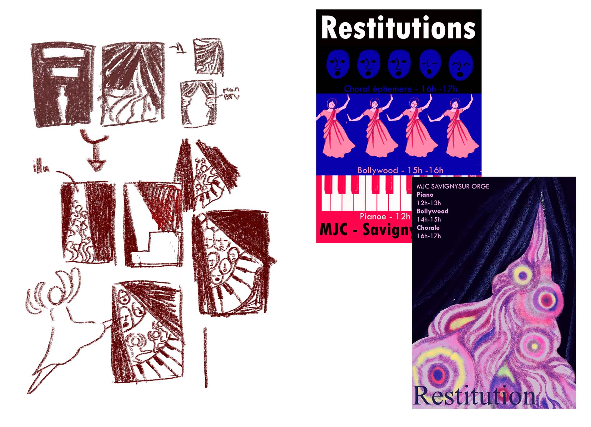

Affiche informant du programme des réstitutions organisé par la MJC de Savigny-sur-Orge présentant du piano, une chorale et une danse Bollywood. Principalement destiné aux proches des performeurs mais aussi au passant curieux.
